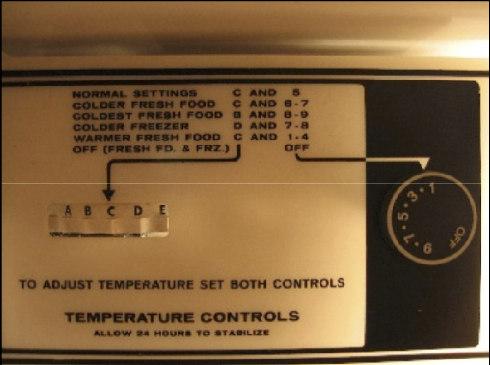
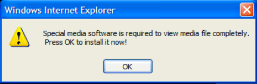
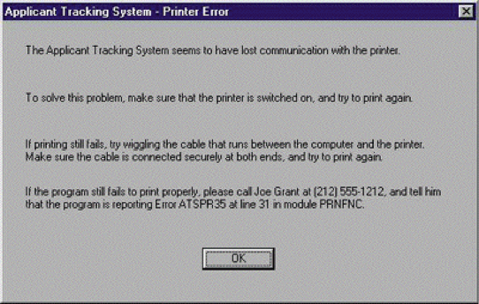

Thus far, we've discussed two ways of evaluating designs. Critique collaboratively leverages human judgement and empiricism attempts to observe how well a design works with people trying to actually use your design. The third and last paradigm we'll discuss is analytical. Methods in this paradigm try to simulate people using a design and then use design principles and expert judgement to predict likely problems.
There are many of these methods. Here are just a sample:
In this chapter, we'll discuss two of the most widely used methods: walkthroughs and heuristics.
The fundamental idea of a walkthrough is to think as the user would, evaluating every step of a task in an interface for usability problems. One of the more common walkthrough methods is a Cognitive Walkthrough (Polson 1992). Despite having been published in the early nineties, the technique is quite general, since it focuses on what people are thinking while using an interface rather than the interface.
To perform a walkthrough, the steps are quite simple:
By the end of this simple procedure, you'll have found some number of missing goals, missing affordances, gulfs of execution, and gulfs of evaluation.
Here's an example of a cognitive walkthrough in action:
Notice how systematic and granular it is. Slowly going through this checklist for every step is a powerful way to verify every detail of an interface.
There are some flaws with this method. Most notably, if you choose just one persona, and that persona doesn't adequately reflect the diversity of your users' behavior, or you don't use the persona to faithfully predict users' behavior, you won't find valid design flaws. You could spend an hour or two conducting a walkthrough, and end up either with problems that aren't real problems, or overlooking serious issues that you believed weren't problems.
Some researchers have addressed these flaws in persona choice by contributing more theoretically-informed persona. For example, GenderMag is similar to the cognitive walkthrough like the one above, but with four customizable persona that cover a broad spectrum of facets of software use (Burnett et al. 2016b):
If you ignore variation along these five dimensions, your design will only work for some people. By using multiple personas, and testing a task against each, you can ensure that your design is more inclusive. In fact, the authors behind GenderMag have deployed it into many software companies, finding that teams always find inclusiveness issues (Burnett et al. 2016a).
Here's an example of people conducting a GenderMag walkthrough on several different interfaces. Notice how evaluators refer explicitly to the persona to make their judgements, but otherwise, they're following the same basic procedure of a cognitive walkthrough:
You can download a helpful kit to run a GenderMag walkthrough.
Here, we'll discuss just one of these: Heuristic Evaluation. This method provides the simplest illustration of what it looks like to apply an analytical method to a design. The basic idea behind a heuristic evaluation is to evaluate whether an interface is learnable by a new user. It works best with 4-5 experts spending a few hours with an interface. Each expert inspects every screen, every button, every label, every feedback, and every state of the interface, evaluating each little detail in the interface against a set of design heuristics. By the end, the group of experts should have found a large number of violations of these design heuristics, which may indicate mild to severe usability problems with the interface. Here is a good example of a heuristic evaluation.
In practice, most people find the heuristics themselves much more useful than the process of applying the heuristics. This is probably because exhaustively analyzing an interface is literally exhausting. Instead, most practitioners learn these heuristics and then apply them as they design ensuring that they don't violate the heuristics as they make design choices. This incremental approach requires much less vigilance.
Let's get to the heuristics.
Here's the first and most useful heuristic: user interfaces should always make visible the system status. Remember when we talked about state? Yeah, that state should be visible.
Here's an example of visible state:This manual car shift stick does a wonderful job showing system status: you move the stick into a new gear and not only is it visually clear, but also tactilely clear which gear the car is in. Can you think of an example of an interface that doesn't make it's state visible? You're probably surrounded by them.
Another heuristic is real world match. the concepts, conventions, and terminology used in the system should match the concepts, conventions, and terminology that users have. Take, for example, this control for setting a freezer's temperature:

I don't know what kind of model you have in your head about a freezer's temperature, but I'm guessing it's not a letter and number based mapping between food categories. Yuck. Why not something like "cold to really cold"?
User control and freedom is the principle that people will take many paths through an interface (not always the intended ones), and so wherever they end up, they should be able to return to where they came from or change their mind. The notions of "Cancel" and "Undo" are the best examples of user control and freedom: they allow users to change their mind if they ended up in a state they didn't want to be in. The dialog below is a major violation of this principle; it gives all of the power to the computer:

Consistency and standards is the idea that designs should minimize how many new concepts users have to learn to successfully use the interface. A good example of this is Apple's OS X operating system, which almost mandates that every application support a small set of universal keyboard shortcuts, including for closing a window, closing an application, saving, printing, copying, pasting, undoing, etc. Other operating systems often leave these keyboard shortcut mappings to individual application designers, leaving users to have to relearn a new shortcut for every application.
Error prevention is the idea that user interfaces, when they can, should always prevent errors rather than giving feedback that they occurred (or worse yet, just letting them happen). Here is a violation of this principle in Apple's Contacts application that once caused me a bunch of problems:
Study this for a bit. Can you see the problem? There are two adjacent commands that do very different things. See it yet? Okay, here it is: "Go to my card" (which is a frequent command for navigating to the address book card that represents you) is right next to "Make this my card" (which is whoever you have selected in the application.) First of all, why would anyone ever want to make someone else have their identity in their address book? Second, because these are right next to each other, someone could easily change their identity to someone else. Third, when you invoke this command, there's no feedback that it's been done. So when I did this the first time, and browsed to a page where my browser autofilled my information into a form, suddenly it thought I was my grandma. Tracking down why took a lot of time.
Recognition versus recall is an interesting one. Recognition is the idea that users can see the options in an interface rather than having to memorize and remember them. The classic comparison for this heuristic is a menu, which allows you to recognize the command you want to invoke by displaying all possible options, versus a command line, which forces you to recall everything you could possibly type. Of course, command lines have other useful powers, but these are heuristics: they're not always right.Flexibility and user efficiency is the idea that common tasks should be fast to do and possible to do in many ways. Will users be saving a lot? Add a keyboard shortcut, add a button, support auto-save (better yet, eliminate the need to save, as on the web and in most OS X applications). More modern versions of this design principle connect to universal design, which tries to accomodate the diversity of user needs, abilities, and goals by offering many ways to use the functionality in an application.
Help users diagnose and recover from errors says the obvious: if an error must happen and you can't prevent it, offer as much help as possible to a user to help them address whatever the problem is. Here's my favorite extreme example of this:

Of course, not every dialog needs this level of support, but you'd be surprised by just how much help is necessary. Diagnosing and recovering from errors is hard work.
I'm not fond of the last two heuristics, mostly because they're kind of black and white. The first is offer help and documentation. Yes, do that, and do it well. This isn't a useful heuristic because it's prescription is so high level. The second is minimalist design, which just seems like an arbitrary aesthetic. We've already discussed different notions of what makes design good. Just ignore this one.
If you can get all of these design principles into your head, along with all of the others you might encounter in this class, other classes, and any work you do in the future, you'll have a full collection of analytical tools for judging designs on their principled merits. There's really nothing that can substitute for the certainty of actually watching someone struggle to use your design, but these analytical approaches are quick ways to get feedback, and suitable fallbacks if working with actual people isn't feasible.
Burnett, M., Stumpf, S., Macbeth, J., Makri, S., Beckwith, L., Kwan, I., Peters, A., Jernigan, W. (2016a). GenderMag: A method for evaluating software's gender inclusiveness. Interacting with Computers, 28(6), 760-787.
Burnett, M.M., Peters, A., Hill, C., and Elarief, N. (2016b). Finding Gender-Inclusiveness Software Issues with GenderMag: A Field Investigation. ACM Conference on Human Factors in Computing Systems (CHI), 2586-2598.
Carroll, J.M. and Rosson, M.B.. 1992. Getting around the task-artifact cycle: how to make claims and design by scenario. ACM Trans. Inf. Syst. 10, 2 (April 1992), 181-212.
John, B.E. and Kieras, D.E. 1996. The GOMS family of user interface analysis techniques: comparison and contrast. ACM Transactions on Compouter-Human Interaction. 3, 4 (December 1996), 320-351.
Nielsen, J., & Molich, R. (1990, March). Heuristic evaluation of user interfaces. In Proceedings of the SIGCHI conference on Human factors in computing systems (pp. 249-256). ACM.
Olson, J. R., & Olson, G. M. (1990). The growth of cognitive modeling in human-computer interaction since GOMS. Human-computer interaction, 5(2-3), 221-265.
Polson, P. G., Lewis, C., Rieman, J., & Wharton, C. (1992). Cognitive walkthroughs: a method for theory-based evaluation of user interfaces. International Journal of man-machine studies, 36(5), 741-773.